第十章·摆动指数和相反意见理论
引言
在此之前，实质上我们所讨论的所有技术指标都是追随趋势的。其目的在于预期新趋势的萌生，或者在新趋势刚一露头后，尽快把它揭示出来。本章所要探讨的与上述追随趋势方法不同，属于另外一种技术—摆动指数。当市场进入了无趋势阶段时，价格通常在水平区间中上下波动，在这种情况下，绝大多数跟随趋势系统都不能正常工作，而摆动指数却是独树一帜.因此，对技术型交易商来说，摆动指数对症下药，使他们能够从经常出现的无趋势市场环境中获利。
然而，摆动指数的用途并不仅限在水平向的交易区间中。在趋势阶段，如果我们把摆动指数与价格图表参照使用，那么，当市场即将出现短暂的极端状态，即通常所谓“超买”或“超卖”状态时，它也能够及早提醒交易者。同时，当趋势的动力正在衰退，而这一危机尚未在价格上明显地显露出来的时侯，我们从摆动指数上也能找到线索。我们通过摆动指数的相互背离现象，能够看出趋势可能已经近乎完结了。
我们先来讲清楚什么是摆动指数，它的构造方法，以及它的含意。然后讨论动力指数及其在市场预侧方面的意义。接下来，我们将按照由简而繁的顺序，介绍几种较为常用的摆动指数。随后，还要提到将摆动指数分析与周期分析参照使用的妙处。最后，我们研究在对某市场进行全面技术分析时，如何把摆动指数恰如其分地利用起来。
摆动指数与趋势分析的配合用法
摆动指数必须附属于基本的趋势分析，从这个意义上说，它只是一种第二位的指标.今后当我们谈到技术分析者手中的各类摆动指数的时候，毫不例外地都要强调指出，市场的主要趋势是压倒一切的，顺着它的方向交易这一原则具有重要意义。不过朋友们也应当了解，在某些场合下，摆动指数也有其特长。例如，在一场重要运动即将降临时，摆动指数分析不惟用处不大，甚至可能使用户误入歧途。然而，一且市场运动趋于尾声，摆动指数就极有价值了。这些，我们不久还要讨论.最后，在上述关于市场的极端状态的研究中，我们还必须加上对相反意见理论的讨论.我们要讲到相反意见理论的作用，以及如何把它揉合到市场分析和交易的整体之中去。
摆动指数的意义
提起摆动指数，我们有很多种构造方法，但它们的真实含义都相差无几。大部分摆动指数的曲线也非常相像。我们沿着价格图表的底部来做摆动指数的图线，把它局限于一条水平向的狭长区域里。不论价格是升、降，还是持平，摆动指数的区域墓本上总是水平向发展的.不过，摆动指数的峰和谷与价格图上的峰和谷同时出现。有些摆动指数的变化具有一个中闻值，从而摆动指数所在的水平区域可以分为上半部和下半部.根据计算公式的具体情况，我们通常把表示中间值的水平线设为“零线”。根据算法的不同，在摆动指数的上下边界之内，既可以标志成从。到100的刻度，也可以标成从一1到+1的刻度。
摆动指数的研读惯例
通常，无论摆动指数达到了上边界还是下边界的极限数值，都意味着当时的价格运动可能幅度过大、速度过猛，因此市场即将出现这样那祥的调整或巩固过程。另外，一般来说，当摆动指数进入区域的下边界时，交易商应当买入，而当它进入区域上边界时，则应当卖出。当摆动指数穿越零线时，也经常构成买进或卖出信号。在我们具体研究各类摆动指数时，将介绍上述规则的具体的应用方法。
摆动指数最三买的三种用途
有三种情况，摆动指数最具效用。这三种情况对绝大多数摆动指数来说都是共同的。
1.当摆动指数的值达到上边界或下边界的极限值时，最有意义。如果它接近上边界，市场就处于所谓“超买状态”，如果它接近下边界，市场就处于所谓“超卖状态”。这两种读数都是警讯，表示市场趋势走得太
远，开始有些脆弱起来。
2.当摆动指数处于极限位里，并且摆动指数与价格变化之间出现了相互背离现象时，通常构成重要的顶替信号。
3.如果摆动指数顺着市场趋势的方向穿越零线，可能是重要的买卖信号。
动力指数
动力指数的概念，是摆动指数分析的一种最基本的应用。动力指数显示的是价格变化的速度，而不是价格水平本身。其计算方法是按照一定的时间间隔，.连续地采集价格变化的数值。举例来说，如果我们要构造10天的动力指数，则简单地从当日的收市价减去10天前的收市价，结果之前的正负符号分别表示应当把它画在零线的上方或下方。动力指数的计算公式是:
M＝V-Vx
其中V代表当日的收市价格，Vx为X天以前的收市价格。
如果当日的收市价大于10天前的收市价(换句话说，价格升高了)，那么M为正数，把它标在零线的上方。如果当日收市价小于10天前的收市价(即价格下跌了)，那么M为负数，把它标在零线的下方。
由于种种原因(以后要交待)，动力指数最常用的时间跨度为10天.但是。实际上任何时间跨度均可以采用(见图10.1a)。如果我们采用较短的时间跨度(比如5天)，则所得的动力指数更为灵敏，其曲线摆动得更明显。如果采用更长的时间跨度(如20天)，那么动力指数曲线就更平缓，曲折较少(见图10.1b)。
动力指数表示价格上升或下降的速度
我们不妨好好看一看，到底动力指数意义何在。图表分析者通过一定时间间隔两端的价格之差构造曲线，意在研究市场上升或下降的速度。如果价格处于上升之中，并且动力指数曲线居于零线上方，且步步上扬，那么，这就意味着上升趋势正在加速。如果动力指数由上升转为持平发展，则意味着当前收市价格的上涨幅度与10天前的涨幅大小一样。尽管价格或许依然处于上涨之中，但其上升速度已趋平稳。如果动力指数开始向零线回落，那么，价格的上升趋势可能依然存在，但其速度则趋于减小，说明上升趋势的动力正在衰退.
当动力指数曲线延伸到零线以下时，表示当前的收市价格低于10天以前的收市价格，近期的下降趋势开始生效（与此同时，10天移动平均线也开始下降）。动力指数进一步深入到零线下方，说明这个下降趋势的动力正逐渐增强.仅当动力指数重新上升之后，分析者才能判断下降趋势开始放缓了。
朋友们请牢记，动力指数显示的是一定时间间隔两端的收市价格之差。如果其曲线处于上升之中。那么就表明当前收市价格上涨的幅度肯定超过10天前的上涨幅度。如果当前价格的涨幅仅仅达到10天前的涨幅，那么动力指数曲线将持平。如果当前价格的涨幅小于10天前的涨幅，那么尽管价格依然上升。动力指数曲线却开始下降了。动力指数就是这样测定当前价格趋势的加速或减速状态的。
动力指数曲线超前于价格变化
因为动力指数的构造特点，它的曲线总要领先价格一步。它比价格的实际上升或下降要超前几夭。当既存价格趋势仍在继续发展的时候，它却可能已经开始持平地伸展了。而当价格开始持平伸展时，它已经朝相反的方向变化了。
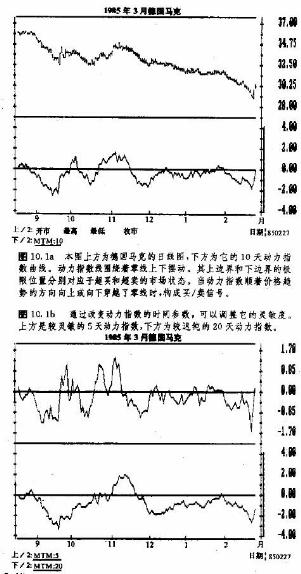
对零线的穿越构成交易信号
在动力指数图中，有一条零线。很多技术分析者把动力指数对零线的穿越看成买卖信号。当动力指数向上穿越零线时，构成买入信号，而当它向下穿越零线时，构成卖出信号。然而，这里我们要再次强调，墓本的趋势分析依然占有压倒一切的地位。我们不应当孤立地采用摆动指数分析所提供的买卖信号，而逆着当前的显要趋势的方向交易。当摆动指数向上穿越零线时，只有在市场趋势也向上的条件下，我们才能真正地买进，建立多头头寸、而当摆动指数向下穿越零线时，只有在市场趋势也向下的条件下，我们才能开立空头头寸(见图10.2a和b)。
上下边界存在的必要性
讲到这黑，还有个间题。我们还没有交代摆动指数的上下边界的意义。先前我们曾经明确，摆动指数分析的主要价值之一，是能够显示什么时候市场正处于极端状态。那么，在动力指数图上，其数值多高才算是过高，多低才算是过低呢?最简单的办法是，凭我们的双眼去观察。先考察一下动力指数曲线在历史上的最高点和最低点，然后分别从它们出发，引出两条水平直线，就形成了上下边界。显然，这两条直线我们必须时常地调整，尤其是出现了重要的趋势逆转之后。不过，这个办法是确定上下边界最简便，并且可能是最行之有效的方法。
还有一种技巧，称为“归一化”方法。我们把前面所说的动力指数的值均除以一个常量，使所得的商局限在从+1到一1的范围内。选择该常量的最简单的方法是，把它选为在我们所研究的时间范围内。可能发生的最大的价格变化幅度。举例来说，如果要构造10天动力指数，就先把当日的收市价格减去10日前的收市价格，得到动力指数值M。然后，把M除以某个价格幅度的10倍(表示该动力曲线的时间跨度)。
最后的结果就是市场在相应的时间范围内可能上升或下降的最大值的一定的百分比，其数值落在从+1到一1的范围内。上述步骤完成后，上、下边界也就确定了，从而我们就可以事先界定“危险区”的位置。另外，这样也易于进行同一市场乃至不同市场之间的历史资料的比较。
一旦确定了动力指数变化区域的极限点之后，我们就可以通过好几个途径来界定“危险区”。一种办法是，测定零线两边动力指数变化的百分比数。另一种办法是，分别侧定动力指数在零线上、下方的两个标
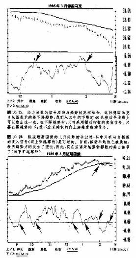
偏差，使95纬以上的动力指数数值落在新的上、下界线之内(新界线与相应的极限线之间即危险区)。那么，任何超出这两个界线的动力指数，都可能构成普告信号，表明市场处于超买或超卖状态。我们的目的就在于找出两条能够容纳绝大部分价格摆动的上下界线，因此，一且这两条线被突破，就标志着市场处于极端状态，从而发出信号，警告我们市场的脆弱性。
利用某个常量作分母把动力指数归一化的方法，也有缺陷。技术分析者往往利用较为复杂的统计学技术来尝试归一化的工作。唐纳德·R·兰伯特在构造他的商品通道指数(CCI)时，采用的是平均偏差作分母(见“商品通道指数”，唐纳德·R·兰伯特，商品杂志，1980年10月号，第40一41页)。
兰伯特的商品通道指数CCI，主要并不是摆动指数，他在这个指数中采用平均偏差作分母，而不是选一个常量作分母。这种方法在摆动指数分析中也是适用的，有些技术分析者也把CI用作摆动指数，尽管其设计初衷显然不在这个方面(见图10.3a和b)。以下，我们很快就要介绍其它儿种摆动指数——韦尔斯·王尔德的相对力度指数(RSI)和乔治.莱恩的随机指数。在这两种摆动指数的计算公式中，对于定义上下边界的间题，都具备更有效的措施。
上面我们在讨论动力指数的时候，对“摆动指数”这个概念的用法并不严格。虽然本来的动力指数曲线有时也被称为摆动指数，但这个说法并不全对。把简单的动力指数曲线称作“动力线”其实更恰当.只有当我们对它进行了归一化处理之后，它才能算得上一种摆动指数。毋庸讳言，“摆动指数”这一术语涵盖了本章所讨论的所有的技术。为了不至于引起混淆，在讨论各种构造公式的时候，我们将采用更具体、准确的概念。
变化速度指数(ROC)
在前面，我们利用一定时间区间两端的价格差(差价)来确定市场的动力。现在，我们利用当前的收市价和一定天数以前的收市价的商(比价)来表示市场的变化速度。为了构造所谓10天变化速度摆动指数，我们把当前的收市价格除以10天以前的收市价格。公式如下:
ROC=100(V/Vx)
其中V是当日的收市价，Vx是X天以前的收市价.
在这里，读数为100的刻度线变成了中间线，或零线(见图10. 4a和b)。如果当前价格高于10天以前的价格(价格涨了)，则其变化速度指数就大于100,如果当前收市价低于10天以前的价格，则上述比数小于100。
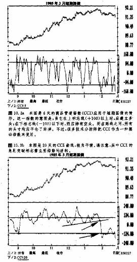
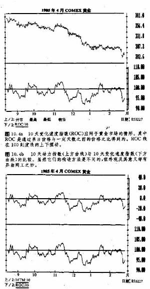
利用两条移动平均线来构造摆动指数
在第九章，我们曾讲过，利用两条移动平均线可以产生买卖信号。当较短期的移动平均线向上或向下穿过较长期的移动平均线时，分别构成买、卖信号。我们曾指出，这种双移动平均线的组合也可以用来构造摆动指数图线。有两种做法。·最常见的一种是，利用“刷形图”的方式，逐日作出两条移动平均线的差，所得刷形图的每根线段都从中央的零线出发，垂直地向正方向或负方向伸展。这一类摆动指数具有三种用途:
1.有助于识别相互背离现象。
2.有助于标识长期趋势中出现的短哲偏移，即短期平均线与长期平均线相距过远的情形。
3.能够显示两条移动平均线的交叉，此时，该摆动指数穿越零线。
另一种办法是，画出两条移动平均线的百分比例，而不是两者的差值(见图10.5a和b)。为了得出这项百分比值，我们把短期移动平均线的值除以长期移动平均线的值。在上面两种方法中，显示的都是短期移动平均线围绕长期移动平均线(实际上，也就是零线)上下摆动的情形。如果短期平均线高于长期平均线，则摆动指数为正，如果短期平均线低于长期平均线，则摆动指数为负。
如果两条移动平均线相距过远，就意味着市场呈现出极端状态，称为“趋势停顿”(见图10.6a和b)。经常，一直要等到短期平均线返回长期平均线后，原趋势才能从停滞中解放出来。.当短期平均线逐步接近长期平均线时，市场就到了关健时刻。例如，在上升趋势中，当较短期的平均线跌近长期平均线时，在正常情况下，它应当从后者身上弹开。这种位置通常代表着一处理想的买进点。这一情形与市场试探主要向上趋势线的局面非常相似。然而，一旦短期平均线向下穿越了长期平均线，那就是趋势反转的信号了。
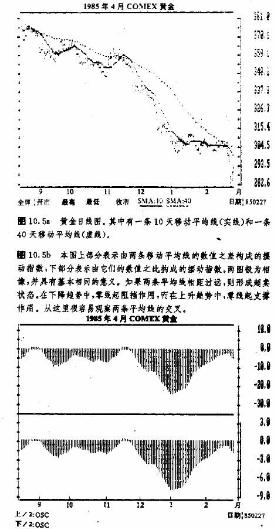
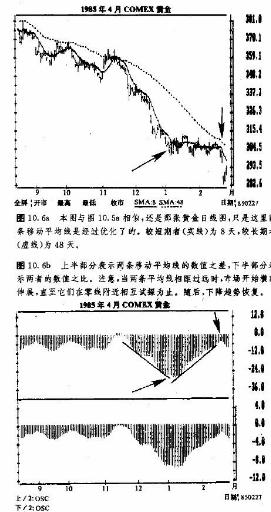
在下降趋势中，当短期平均线上升到长期平均线下边时，也代表着绝妙的卖出机会。然而，假若前者向上穿越了长期平均线，那么就是趋势反转的信号了。如此一来，两条移动平均线之间的关系，就不仅可以用来构造漂亮的趋势顺应系统，而且有助于识别短期内出现的超买和超卖状态。最后说明一下，在这种摆动指数的构造及其分析中，优化的移动平均线同祥很有价值(见图10.7a和b)。
摆动指数的意义
前面讨论的三种例子——动力指数、变化速度指数、以及移动平均线之差——是几种简单的摆动指数。在它们的基础上，我们再来探讨一下另外几种较为复杂的摆动指数——韦尔斯·王尔德的相对力度指数和乔治·莱恩的随机指数。不过在进入正题前，我们先来较深入地讨论一下摆动指数的意义，并引入一个重要概念——相互背离。
1.对线的穿越
摆动指数最简易的用法是，利用中间值(或称零线)来确定买卖信号。当摆动指数向上穿越零线时，我们买进，而当它向下穿越零线时，我们卖出。在动力指数图上，这种用法最常见.正如我们前面曾交代的，当这类信号与市场趋势方向一致时，这种方法最为有效。
商品研究局CRS摆动指数零线穿越分析最精采的实例。当数“即时相对力度(CRS)摆动指数”。这种指数出现在商品研究局的CRB期货图表服务系统中。在上升趋势中，CRB零线的作用与主要上升趋势线极为类似，起到支撑线的作用。在牛市中，当市场调整时，CRS指数的曲线通常下降到零线，然后，从它上面反弹。在熊市中，当市场上冲时，CRS零线也象主要下降趋势线那样，起到阻挡作用。因此，当CRS指数从上方或下方接近零线时，我们就可以采取相应的措施(见图10.8)。
在上升趋势中，零线代表低风险的买进区域;在下降趋势中，它代表着低风险的卖出区域。当零线被穿越时，构成重要的趋势信号，该信号常常在此后数周乃至数月中持续有效。因为CRB摆动指数比其它大多数摆动指数的时间跨度都长些，所以，我们既可以把它用作摆动指数，也可以把它用作重要的追随趋势指标。
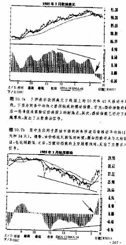
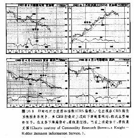
2.临界分析，或曰“摆动指数极限值”的研究
摆动指数的第二种用途在于临界分析，或者说是极端状态识别。换言之，摆动指数区域的外层，可用来标志市场的极端状态。大部分复杂的摆动指数具备上限区和下限区，分别标志着市场的超买和超卖状态。例如，在相对力度指数(RSI)中，其垂直刻度的范围从。到0到100。在70和30两个位置上，我们标出了两条水平直线。当RSI超过70时，就是市场处于超买状态的警告信号。而当它低于30时，可能构成超卖状态的信号(见图10.9a和b)。
因此，从交易商的角度来看，当RSI超过70线时，可以针对已有的多头头寸执行卖出获利的对策;而当RSI低于30线时，就针对已有的空头头寸采取买进获利的对策。当RSI从70线上方向下穿越回来，或者从30线下方向上穿越回来的时候，我们也可以相应地开立新的头寸。关于这一点，我们留到具体讨论这种摆动指数时再详谈。
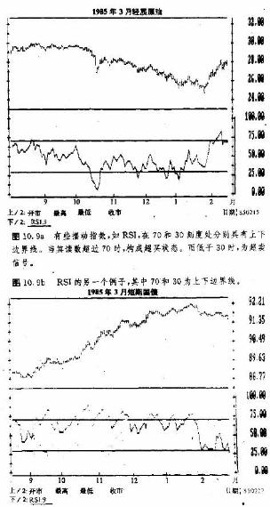
3.“相互背离”的或要性
摆动指数的利用还有第三条途径—揭示相互背离现象。这可能是它最有价值的应用。所谓相互背离，是指摆动指数曲线与价格图线相互背离，各自朝相反的方向伸展。在上升趋势中，最通常的摆动指数背离，是指价格保持上涨，但摆动指数却无力上升到新的高点，不能验证价格趋势。我们将集中讨论这一现象。这种情形经常成为绝好的警示，表示新一轮价格上冲可能会失败，所以我们把它称为看跌背离，或负向背离。
在下降趋势中，如果摆动指数不能验证价格趋势的新低点，就构成了所谓看涨背离，或曰正向背离，它是市场即将反弹(有时是短暂反弹)的先兆，在上面两种情形下，摆动指数的形态常常与双重顶或双重底形态相似。在我们判别相互背离现象的时候，有一个重要的先决条件，即背离现象应当发生在摆动指数的极限区域及其附近。举例来说，如果RSI处于70线之上，或30线之下，那么，此时RSI指数本身就已经处于较危险的境地，在这种背景下出现的背离现象，其意义当然非一同寻常。在RSI超过70时发生的看跌背离，或者当它低于30时出现的看涨背离，均可能构成重要的警示信号，我们必须谨慎从事(见图10.10a)。
第二种形式的“相互背离”，是指当摆动指数穿越了重要的峰值或谷值的时候，价格图形却尚未发生相应的突破。摆动指数的读数及其标志水平，具有随着趋势方向向上或向下推移的倾向。摆动指数曲线上的峰和谷，通常与价格图表上的峰和谷同时出现。如果价格处在上升趋势中，而摆动指数的峰和谷也呈现出依次上升的形态，那么，一旦摆动指数突然向下穿破了前一个显著低谷的水平，就经常预示着趋势即将由上转下。在下降趋势中，如果摆动指数向上冲破了前一峰值，当然也就逾味着市场可能出现底部动作(见图10.10b)。
为了更好地演示相互背离原则的应用方法，我们不妨仔细谈谈韦尔斯·王尔德的相对力度指数RSI。在过去几年中，它在技术型期货商中间可谓炽手可热。
相对力度指数(RSI )
RSI是韦尔斯·王尔德首创的，发表在他的《技术交易系统的新思路》一书中(1年出版)。我们在这里只介绍这种方法的要点。如果朋友们想深入了解它，请阅读王尔德的原著。考虑到这种摆动指数在期货商中间特别流行，我们将利用它来讲解摆动指数分析的大部分原则。
正如王尔德所指出的，构造动力指数(采用价格之差)面临两大主要问题。其一就是，如果在过去的价格轨迹中存在急剧的升降，则经常导致动力指数的偏离。例如，在10天动力指数曲线上，如果10天以前，价格曾经急剧地上升或下降，那么，即使当前的价格变化甚少，在动力曲线上也会引发突然的转折。为了减小这种扭曲现象，我们就必须采取适当的平滑技术。第二个问题是，在动力指数图上，出于前后对照的需要，我们必须不断地调整上下界线。而在RSI的计算式中，不仅提出了必要的平滑措施，同时，通过设定从O到100的恒定的垂直刻度，也一并解决了第二个难题。
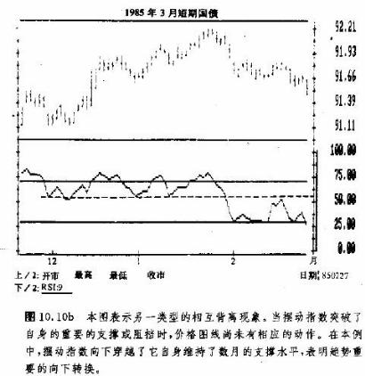
顺便说说，“相对力度”这个术语用得有点不当。对于熟悉股票分析“相对力度”概念的朋友来说，经常容易混淆。’所谓相对力度，一般是指两个不同对象的比值。某种股票，或者工业类股票对标准蒲耳氏500种股指(S&P500)的价格之比，就是该股票或工业类股票同标准蒲耳氏500种股票指数相比较而言的“相对力度”的标志。在商品市场上，我们也可以在同一商品的不同月份之间，或者在不同的市场之间，甚至在某市场与市场的广泛性指数，如CRB期货价格指数之间，采用某种比值来判断它们的相对力度。王尔德的相对力度指数其实并不是用来比较不同对象的相对力度的，就这一点而论，它的名称易引起误会。不过，RSI的确解决了摆动指数的数值偏离问题和不断调整上下边界的间题。其计算公式如下:
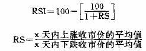
假定我们在计算中采用14天的时间跨度。为了得出收市价平均的上涨值，我们先把14天内上涨了的收市价的上涨幅度相加，然后将所得的和除以14而在计算平均下跌值的时候，则把所有下跌了的收市价的下跌幅度相加，然后把它们的和除以14。把平均上涨值除以平均下跌值，就得出相对力度(RS)。然后，我们把RS的值代入RSI的公式中。其中，只要简单地改变x的数值，就可以修改RSI的时间跨度——天数。
王尔德原本采用的时间跨度是14天。有些技术分析图表服务系统，例如《商品纵览》(商品新闻服务公司的一个分支机构出版)，则采用了9天的时间区间。时间跨度越短，则摆动指数越灵敏，其变化幅度也越大。而当RSI达到了上限或下限时，其效果最佳。因此，如果用户在较短的时间基础上进行交易，要求摆动更为明显，则不妨缩短其时间跨度。如果扩大时间跨度，则摆动指数就变得更平缓，幅度也更狭窄，故9天的摆动指数的幅度要大于原来14天的摆动指数幅度。不过，虽然9天和14天的时间跨度仍然是最常见的，但为了改进其效果，技术分析者也尝试了其它的时间长度，比如5天和7天(见图10.11a和b)。
逐日刷新RSI图表的过程并不复杂。用户只需要最新的平均上涨价和平均下跌价即可。在各类图表服务中都包括了这两类数字，并且，还有对计算方法的解说。例如，如果我们要刷新9天的RSI，则先把上一个平均上涨值和平均下跌值分别乘以8，然后相应地加上最新一天的上涨幅度和下跌幅度，再把两个和分别除以9，得出新的平均值，然后，就可以代入公式计算了。当然，如果我们同时跟踪好几个市场的话，即使有计算器帮忙，上述计算也比较麻烦。好在现在大部分技术分析软件和信息服务系统都具有逐日刷新RSI的功能。于是，计算机承担了计算的任务，而分析者则解脱出来，把精力集中到研究上面。
RSI的研读
我们把RSI画在垂直刻度从0到100的图表上。当它的读数超过70时，显示超买状态，而当它的读数低于30时，则是超卖状态（因为在9天的RSI图表上，它的摆动幅度较大，所以，我们分别用80和20来
代替70和30两个界限)。不过，在牛市和熊市中，RSI会发生漂移现象，所以，80通常成为牛市中的超买水平，而20则是熊市中的超卖水平。
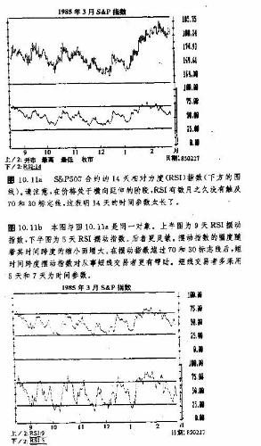
“衰竭动作（按照王尔德的说法）发生在RSI超过70或低于30的情况下。所谓顶部衰竭动作，是指在上升趋势中，RSI的新一轮峰值(在70以上)无力超过前一个峰值，随后，又向下跌破了前一个低谷。所谓底部衰竭动作，是指在下降趋势中，RSI的新一轮谷值(在30以下)无力跌过前一个谷值，随后，又向上突破了前一个峰值(见图10. 12a和b)。
在RSI高于70或低于30的条件下，如果在RSI的图线同价格图线之间，呈现出相互背离的情形，就构成了严重的警告讯号，我们绝不可掉以轻心。王尔德本人也把相互背离现象看成“相对力度指数最有指示价值的特性”(王尔德，第70页)。
在RSI的图线上，也会出现各种图表形态，以及支撑和阻挡水平等。我们也可以利用趋势线分析，在RSI图表上分析RSI的趋势的变化。我们列举了一些实例，以说明上面几点的应用(见图10.13a和b)。
根据我个人使用RSI摆动指数的经验，它的最具价值之处就是，在RSI超过70或低于30的情况下出现的衰竭动作(或者说背离现象)。下面，我们再来澄清一下关于摆动指数的另一个重要问题。在趋势强烈的市场环境中，无论是上升趋势还是下降趋势，通常在趋势发生之后不久，在相应的摆动指数图上就会出现表示极端状态的读数。在这种情形下，如果我们就此认为市场处于超买或超卖状态，通常是言之过早的。如果我们仅仅根据这一点就平仓获利，往往要丧失很多本可到手的利润。在强烈的上升趋势中，超买的市场状态常常能够持续一段时日。仅仅根据摆动指数进入了上边界这一点，并不能构成足够的平回多头头寸的理由，更不用说甘冒大险，逆着强劲的上升趋势做空头头寸了。
当RSI第一次进入超买或超卖区域的时候，通常只是个警告信号。而值得我们密切关注的信号，是在摆动指数再次进入危险区域的时候。如果RSI的第二轮动作未能验证价格趋势，并没有相应地达到新高点或新低点(于是，在摆动指数图上就出现了双重顶或双重底形态)，就可能出现RSI的背离现象。此时，我们不妨采取一点防备措施，以保护已有的头寸。如果摆动指数朝市场相反方向突破了自身的前一个峰或谷，那么背离现象(或衰竭动作)就到了证实。
然而，除非价格趋势本身也显示出反转的迹向，否则，即使上述情况已经出现了，如果我们平仓脱离市场，可能时机还是不成熟的。在对付这种局面的时候，紧凑的保护性止损指令或许是最靠得住的。从这
里，我们可以得到一个教训:不应该仅仅因为摆动指数接近了极限值，就放弃有利的头寸。应当耐心地伺察RSI第二次进入危险区，只有到了这个时候，方可着手采取一些预防措施，比如部分地平仓获利，或者采取较紧凑的保护性止损指令等。
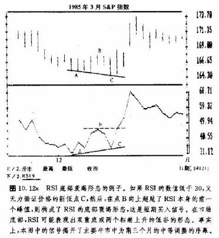
利用70和30标志线产生信号
在RSI图表上70和30刻度的位置上，分别有两条水平直线。交易商常常凭借这两条直线来得出买、卖信号。我们已经知道，当RSI低于30时，即苦示着市场的超卖状态。假定交易商观察到RSI已经跌到30以下，判断市场已经接近底部，正在寻求买入的机会。然后，他就预期摆动指数在超卖区即将形成某种形式的背离现象或双重底形态。在这种倩况下，一旦RSI向上穿越30线，许多交易商便认为这是验证信号，表明RSI的趋势反转向上了。反过来，在超买的市场状态下，当RSI向下穿回70线时，也经常被看作卖出信号。讲到70线和30线，下一节我们不妨再看看另一种摆动指数。在那里，我们也采用相同的刻度线来标志趋势的变化，当然也有同样的美中不足之处(见图10.14a和b)。
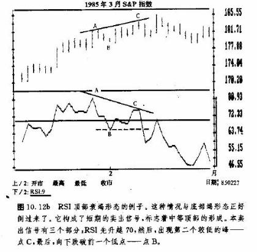
随机指数(K%D>
随机指数是由乔治.莱恩在许多年前首创的。不过近年来，它在期货行业受到了广泛的注意。其理论依据是，当价格上涨的时候，收市价格倾向于接近当日价格区问的上端。相反地，在下降趋势中，收市价格倾向于接近当日价格区间的下端。在随机指数中，采用了两条图线——%K线和%D线。其中对D线更重要，主要由它来提供买卖信号。
随机指数的目的在于，显示在过去一定日子里的价格区间中的相对位置。在这种摆动指数中，5天是常用的时间跨度。K线在两条线中更敏感，它的计算公式如下:
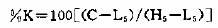
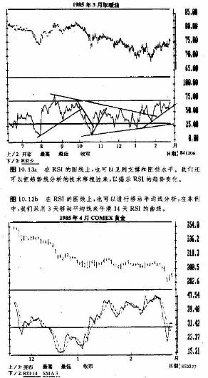
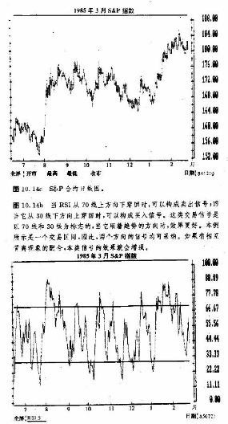
其中C是当日的收市价，L5是前5日内的最低价，H5是前5日内的最高价。
上述公式按照从0到100的百分比例的形式，简单地求得了当日收市价在过去5日内的全部价格范围中的相对位置。如果结果很高(超过70)，，则表明当日收市价接近该价格范围的上端，而如果结果较低 (小于30)，则当日收市价接近该价格区间的下端。
第二条线，%D线，其实是写K线的3天移动平均线。%D的计算公式如下:
%D=100×(H3/L3)
其中H3是3天的(C—L5)的总和，而L3是3天的(H5—L5)的总和。在图表上，上面求得的两条线，在从0到100的的垂直刻度之间摆动。其中K线为实线，较平缓的D线为虚线。主要的信号是，当D线处于超买或超卖区时，D线与相应的期货合约的价格图线之间的相互背离现象。这里，上、下极限区也分别以70和30两个刻度为标志，同RSI类似。最佳的买入信号发生在D值为10到15的时候，而最佳的卖出信号则出现在D值为85到90的时候.
当D线居于70之上并形成了两个依次下降的峰，而价格却持续上涨的时候，就构成了看跌背离信号。当D线位于30之下并形成了两个依次上升的谷，而价格却持续下跌的时侯，就构成了看涨背离信号。假定上述诸因素皆备，那么在D线已经转向之后，当实的K线穿过慢的D线时，就算构成了真正的买、卖信号。换句话说，两线的交叉应当发生在D线上的峰或谷的右侧。例如在底部，如果D线已经完成底部动作并已转头向上之后，K线才向上穿越了D线，那么，这个买入信号就来得强烈些。而在顶部，如果D线事先已经达到顶点并转头下落了，然后K线才向下穿越了D线，那么，这个卖出信号也比较强烈。因此，两条线均向同一方向移动时出现的交叉现象，是比较强烈的信号。
在好几篇关于随机指数的文章中，都指出了上述“右侧相交”的重要性。然而，如果我们是顺着趋势方向交易的话，这一点就不是如此要紧了。例如，在市场处于上升趋势，价格当时只是短暂地回落的情况下，如果随机指数已经在超卖区发出了买入信号，那么，它是不是属于“右侧相交”并不重要。然而，如果摆动指数显示当前趋势正处于反转之中，那么上述这一点就变得事关重大了。在我们进行所有各种分析的时候，总是必须根据较强的信号，才能得出趋势反转的结论，而判断“趋势恢复”要简单得多。
关于随机指数，还有各种改进的用法，但是“万变不离其宗”，上面讲解的已经包括了随机指数最本质的特点(见图10.15a和b)。尽管随机指数较为复杂，但它的基本道理却仍然属于摆动指数的范畴。当%D线，
线进入到极限区域，并出现与价格变化相背离的现象时，这是预警，当较快的K线穿越了D线时，才是真正的买卖信号。
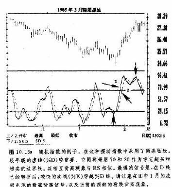
我们也可以在周线图和月线图上利用随机指数来从事长期分析。实际上，莱恩博士推崇在周线图上应用随机指数，以辅助确认市场的主要趋势。当然，我们也可以得心应手地把它应用到日内图表的分析中，
以进行短线交易(见图10.16a和b)。
把随机指数进一步放慢
大部分交易商更乐于把随机指数进一步放慢，在这种办法中，我们去掉较敏感的%K，原先的%D线摇身一变，变成了新的%K线，不过它比原来的写K线当然要慢些了。新的%D线就更慢，它是这个新%K线的3天移动平均线。在这个放慢的处理过程中，我们得出的是原先的%D线(新的%K线)，以及它的3天移动平均线(新的%D线)。人们普遍认为，更慢一步的%D线的信号更为可靠(见图10.17a和b)。
在1984年6月号的《股票和商品技术分析》杂志上，收有乔治·莱恩写的“莱恩的随机指数”一文。乔治·C·莱恩博士还有一篇文章，题目是“随机指数”，发表在1984年的《交易策略》中。
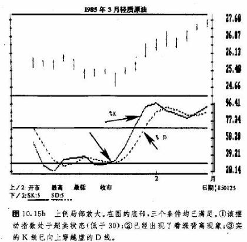
拉里·威廉斯指数（%R）
拉里·威廉斯指数与随机指数的概念类似，也表示当日的收市价格在过去一定天数里的全部价格范围中的相对位置。把这段日子里的最高价减去当日收市价，然后把所得的差除以这段日子的全部价格范围，就得到当日的威廉斯指数。不过，威廉斯指数的刻度与随机指数的刻度比起来，顺序正好相反，0到20算作超买区，80到100为超卖区。前面关于各种摆动指数的讨论也适用干%R，其中的要点也在于发生在超买或超卖区的相互背离现象(见图10.18a和b)。
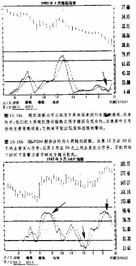
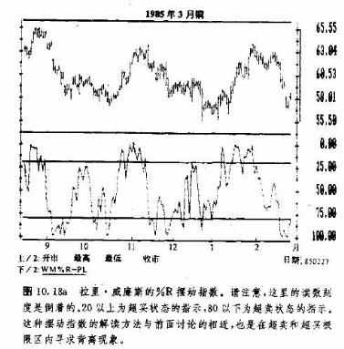
依据周期长度选择时间踌度
拉里·威廉斯指数的另一个特点是，我们能够把它同市场上的主要周期联系起来，其常用的时间跨度为淘期长度的1/2。这就意味着，如果按照日历计算的周期长度分别为14.天、25天和56天，那么我们计算式中的时间跨度就分别对应为5天、10天和20天。王尔德在RSI中采用14天的时间参数，就是28天的一半。在前一章中，我们曾谈到，在所谓最佳的移动平均线以及摆动指数的算法中，总会不约而同地遇到5天、10天和20天这几个“老脸色，的。此处的情况其实也一样，我们就无须重复了。总之，日历上的28天(即20个交易日)是个重要的市场周期(月周期)，其余数字均是它的谐波周期。5天的随机指数、10天的动力指数14天的RSI等等，基本上都是以28天周期为基础的，分别相当于这种主流周期的1/4和1/2。在第十四章中，我们还要交代时间周期的重要性。
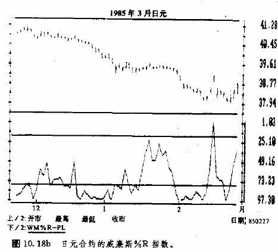
趋势的重要地位
本章讨论了如何利用摆动指数来进行市场分析。它们有助于揭示市场短期的超买和超卖状态，提醒交易者誉惕可能出现的相互背离现象。开头我们介绍的是动力指数及其归一化问题，进而把它改进成了一种摆动指数。接下来，我们研究了另一种摆动指数，称为变化速度指数(ROC)，其中我们利用价格之比(比价)代替了动力指数中的价格之差(差价)。然后，我们谈到，也可以利用两条移动平均线之间的距离，来显示市场短期的极端状态以及买卖信号。最后，我们进述了RSI和随机指数，以及摆动指数的时间跨度同市场周期的协调间题。
背离现象分析是摆动指数最大的长处。但是，这里要提醒朋友们，绝不可把背离现象分析奉若神灵，而把基本的趋势分析扔在一边。大多数精于摆动指数分析的人都明白，摆动指数的买入信号处在上升趋势中更灵验，而摆动指数的卖出信号处在下降趋势中才更有效。当我们们分析市场的时候，首要的是确认市场的一般趋势。如果趋势向上，则应采取买入的策略。然后，我们才利用摆动指数来帮助我们寻求入市时机、当市场在升趋势过程中处于超卖状态时，我们买入.而当市场在下降趋势中处于超买状态时，我们卖出。或者举例来说，在主要上升趋势的条件下，当动力指数向上穿越零线时，我们买人;在下降趋势的条件下，当动力指数向下穿越零线时，我们卖出。
顺着主要趋势的方向交易这一点很关键，其重要性怎徉强调都不过分。如果我们过于迷信摆动指数，那么，危险就在于我们可能仅仅看到了背离信号本身，却违背了大趋势的方向。这样一来，我们往往要遭
受损失。尽管摆动指数确实有其价值，但是它只是许多分析工具中的一种。因此，它只是我们进行基本趋势分析的辅助手段，绝不能取代基本趋势分析。
摆动指数何时最为有效
在某些场合，摆动指数的功效比平常更为出色。当市场处于横向延伸状态时，价格往往起伏不定，徘徊数星期乃至数月。在这种情况下，摆动指数却能紧密地跟踪价格的变化。摆动指数的峰和谷与价格图线的峰和谷几乎精确地同步出现。因为两者均呈横向伸展的态势，所以其轮廓极为相似。然而，市场迟早总会发生价格突破，形成新的上升趋势或下降趋势。从摆动指数的天性来看，在这种价格突破发生的时候，它已经处在极端位置了。如果突破方向向上，摆动指数则已经处于超买区。如果突破方向向下，则摆动指数已经处于超卖区。此时此刻，交易商进退两难.一边是看涨的价格突破信号，一边是摆动指数的超买状态显示，他该不该买呢?或者，一边是看跌的价格突破信号，一边是摆动指数的超卖状态显示，他该不该卖呢?
在这种情况下，我们最好暂时把摆动指数丢在一边，该怎么做就怎么做。理由是，随着重要的价格突破的出现，新的趋势尚处于早期阶段，此时，摆动指数常常很快就达到极端区域，并且将在其中维持一段时间。碰到这种情况时，我们应当主要考虑基本的趋势分析，而让摆动指数暂退到幕后。之后，随着趋势的日渐成熟，我们才逐步增加摆动指数在我们的考虑中的份量(在第十三章中我们将看到，艾略特波浪分析的第五波(最后一波)往往验证了看跌的摆动指数背离信号)。当主要趋势信号出现后，如果交易商仍拘泥于摆动指数，等到它进入超卖状态时才买入，那么，他将错过很多生气勃勃的牛市动作。一言以蔽之，当重要趋势处于初期时，不要太介意摆动指数;但是当它渐趋成熟的时候，我们就应当密切注意摆动指数的信号。
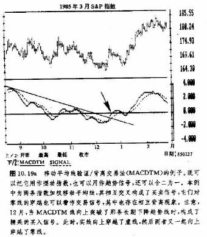
移动平均线相互验证/相互背离交易法（MACDTM）
在前一章，我们曾提到一种利用两条指数加权移动平均线构造的摆动指数，下面出场的就是它。所谓移动平均线相互验证/相互背离交易法(MACDTM)系杰拉尔德·阿佩尔首创的。在他的计算公式中，两条移动平均线的天数已经选定了，但用户也可以另作选择。在这种方法中，两条指数加权移动平均线围绕着零线演变。其中最有用处的信号是，短期平均线(实线)穿过长期平均线(虚线)。当短期平均线向上穿越长期平
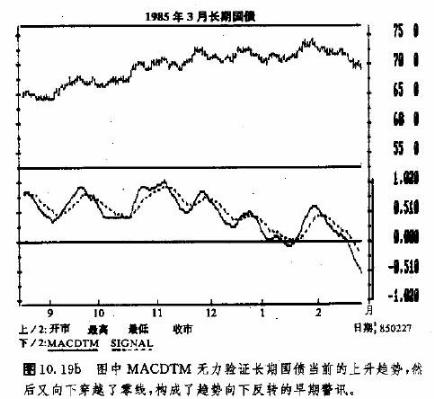
均线时是买入信号，当短期平均线向下穿越长期平均线时，为卖出信号(见图10.19a和b)。
从这种方法中，我们也可以发现相互背离现象。其信号以平均线对零线的穿越为验证.我们还可以利用趋势线方法来研究平均线的趋势变化。理想的买入信号是，先有看涨的背离现象，再有短期移动平均线的向上穿越长期平均线，最后还有两条平均线都向上穿越了零线。而理想的卖出信号则刚好相反。
利用交易量累积法作摆动指数
在前面的章节中，为了改进OBV法，我们提出了交易量累积法。当时我们曾指出，也可以把交易量累积法用作摆动指数。最初的交易量累积法及其摆动指数的设计，都是出自马克·蔡金之手。为了构造这种摆动指数，我们对交易童累积值作出两条移动平均线，然后把两者之差用刷形图表示出来。其图形居于零线的上方或下方。我们建议分别采用3天和10天作为两条移动平均线的时间跨度。这个摆动指数的研究方法，与本章前面关于两条移动平均线之差的有关内容一致，其中唯一的差别在于，我们在这里追踪的是交易量，而不是价格(见图10.20a和b)。
相反意见理论
摆动指数分析研究的是市场的极端状态。关于市场极端状态，还有一种极为流行的研究方法—相反意见原则。在本书一开头，我们讲过，市场分析主要有两条途径—基本分析和技术分析。虽然我们一般也把相反意见理论归入技术分析的范畴，其实，把它说成是某种心理学分析更合适。相反意见理论是市场分析的第三条重要途径—心理学。在这种方法中，我们是根据各个期货市场的投机者们的牛气或熊气程度来预测市场的。
相反意见理论认为，当绝大多数人看法一致时，他们一般是错误的一方。那么，我们的正确的选择应当是，首先确定大多数人的行为，然后反其道而行之。
汉弗莱·R·尼尔是逆向思维的创始者。他在1954年出版的《逆向思维的艺术》(卡克斯顿出版社)中，推出了他的理论。10年后，即1964年，詹姆斯·H·亚贝特着手把尼尔的理论应用到期货交易中，创立了市场风向标通讯服务，并在其中引入了“看涨意见一致数字”。他对商品市场上的各种咨询材料每周进行一次统计，以确定在专业人士中间看涨或看跌的程度。这项调查的目的在于，把市场情绪通过一系列的数字表示出来，以便分析研究和顶侧。该方法的理论前提是，绝大部分期货商在很大程度上都受到市场咨询机构的影响。因此.，我们通过跟踪各种专业性咨询材料的观点，不难比较准确地估计交易者大众所采取的态度。
市场风向标通讯服务是黑达地出版公司出版的。对于有兴趣深入了解这个问题的朋友，我们推荐R·厄尔，黑达地的《相反意见理论，如何利用它在商品期货业获利》一书(黑达地出版公司，1983年)。
另外还有一家信息服务公司，也提供关于市场情绪的指标，称为“市场看好意见一致程度指数”(简单说即意见一致指数)，刊登在《全国商品期货周刊》上，每周五出版。在该指数中，以75%作为超买标志，25%作为超卖标志.
“市场风向标”的意见一致数字有个独特之处，它对各种市场咨询材料采取了不同的加权考虑。对影响面比较广泛者，则其权重较大，而、影响面较小者，则权重较小。这样下来，就能更准确地反映出各种资讯材料的影响力。上述逐周进行的调查结果，就是看涨意见一致数字，逢周二刊发截止到上周五为止的行情。这些数字用百分比的形式表示市场的看涨情绪，其读数范围从0到100。
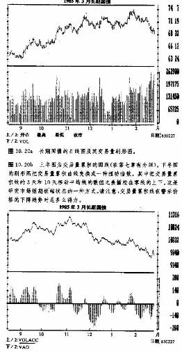
看涨意见一致数字的研读
大部分交易商都采用相当简明的方法来研究这个每周发布的数字。如果数字大于80%，我们就认为市场处于超买状态，意味着可能即将出现顶部过程(80%的看涨数字也就相当于20%的看跌数字)。如果数字低于30%（即30%地看涨，70%地看跌），我们就认为是市场处于超卖状态，表明市场或许即将发生底部过程。
即使我们把看涨意见一致数字单纯用在这一方面，那么就揭示危险的市场状态而言，它已经非常有价值了。但是，这些数字的用处还不仅仅局限于这一方面。下面我们就来仔细看看其理论，讨论一下相反意见理论的其他几种运用方法。
一般认为，相反意见理论的基础是，专业人员的意见通常是错误的。表面上看来，这一点似乎只是逻辑上的推演，但是实际上，特别是在市场处于转折关头时，这一理论玄妙无穷。它基本上由两个方面组成。
相反意见理论显示了买方或卖方的余力
我们以某个投机者为例。假定该投机商阅读了他最信奉的咨询材料后，坚信市场即将大规模地上升.那么，那份材料越是牛气十足，这个交易商就会越积极地入市买进。但是，一且他的资金全部投入了市场，他自己就已经处子超买状态了——即他已无剩余资金再投入市场了。
我们把这种情形推广到全体市场参与者。如果有80%到90%的交易商对某市场都看好，那么就意味着他们已经在这个市场买入了头寸。那么剩下来，还有谁来继续买入，把市场推得更高呢?这是理解相反意见理论的关键。如果交易商们已经以压倒性的多数倒向了市场的某一边，那么，简而言之，市场上已经没有足够的买进或卖出压力来把当前趋势继续推动下去了。
相反意见理论体现了大小户实力对比
相反意见理论的第二个特点是，它能够显示大户与小户的实力对比。期货交易的“总和为零”。每一手多头合约都伴随着别人的一手空头合约。如果80%的交易商都站到了市场的多头一边，那么剩下的20%的人(空头持有者)必定资金雄厚，才能完全容纳其余80%的人所持有的多头头寸。因此，空头者的头寸规模必定比多头者大得多(在本例中，达到了4比1的程度)。
这就意味着空头者必定拥有庞大的资本，他们才是市场上的强者。相形之下，另外80%的人平均每人拥有的头寸就小得多了，因此，他们是弱者。每当价格出现突然变化的时候，他们往往不得不把这些多头头寸卖出平仓。综合上述，相反意见理论并不是什么“专家常常是错误的”那么简单。如果这句话是正确的，那么专业人士的饭碗早就给打烂了。要知道，期货行业是无情的，只认利润不认人。
看涨意见一致数字的另外一些特点.
在我们采用看涨意见一致数字时，还必须注意它的其它一些特点。看涨意见一致数字的均衡数值为55%。这中间包含了对一般投资大众天生的买入倾向的修正。其上限为90%，下限为20%。这里也一样，在牛市环境下，我们要:把上下限稍许地向上修正一下。
当看涨惫见一致数字大于90%或小于20%时，通常我们就可以考虑建立相反的头寸。在这种情况下，意见一致程度已达到极点，宜立即采取与当前趋势相反的交易措施。如果数字高于80%或低于30%，我们就处于危险区，显示市场可能即将反转。不过一般认为，在这种不太极端的情况下，我们应当等到这个数字本身的趋势发生变化后，再逆着价格趋势交易。我们应当密切关注看涨意见一致数字的方向性变化，特别是当变化发生在危险区域时候。一般地，如果在一周内这种方向性变化的幅度达到了5%那就足以说明我们应当考虑建立反方向的头寸了。
持仓兴趣的要性
在我们研究看涨意见一致数字时，也要兼顾持仓兴趣。一般来说，持仓兴趣越高，那么上述的反向头寸盈利的潜力就越大。不过，我们不应当在持仓兴趣保持上升势头的时候建立反向头寸，如果持仓兴趣持续上升，那么，当前趋势继续发展的可能性就比较大，必须等到持仓兴趣开始持平或者降低时才能采取行动。
另外，我们还必须研究交易商分类报告，以确认保值者在持仓兴趣中占有的份额不超过50%。当持仓兴趣的大部分来自投机者的时候(他们被看成是弱者)，相反意见理论的效果更佳。另外，我们也建议朋
友们不要与大户保值者的方向相冲突。
观察市场对基本面消息的反应
我们也应当密切关注市场对基本面的新闻的反应.当上述数字处于超买的范围内时，如果价格无力对有利的消息作出反应，那么这就是个清晰的警讯，表明市场可能要反转。当第一个负面消息出现后，通常就足以把价格很快地推向另一个方向。相应地，当它们处在超卖区(低于20%)时，如果价格无力对不利的消息作出反应，那也是警讯，显示当前市场上的低价已经包容了所有的坏消息，一有看涨的讯息，就会把
价格推上去。
把相反意见理论与其它技术工具相接合
一般来说，我们应当顺着意见一致数字的趋势方向进行交易，直到它达到极限为止.然后，就要警惕它的趋势可能发生变化的信号。重复一下，意见一致数字的方向性变化如果达到5%的程度，通常就构成重要信号。不用说，在这种关键时刻，为了有利于确认市场的转折，我们也应当同时兼顾那些更正统的技术分析手段，如支撑或阻挡水平的突破、趋势线移动平均线等等，以验证趋势的反转事实。在看涨意见一致数字处于超买或超卖区时，摆动指数图上的背离现象特别有参考价值。
看涨意见一致数字的回撒现象
除了可以利用看涨意见一致数字帮助我们辨别市场的极端状态以外，我们还可以从该数字的回撤现象中得益。在其上升趋势中，50%回撤区通常起到支撑作用，而在下降趋势中它通常是阻挡区。在猛烈的上升趋势中，只要原趋势能够继续，那么，从超买区(80%以上)向下的调整，通常会在50%回撤处得到支撑。在熊市中，如果价格要恢复下跌，那么从超卖区(20%以下)的反弹常常在50%回撤位置受到阻挡。如果50%回撇区被决定性地穿越了，往往就构成趋势反转的警讯。
结语
我们讲述上述诸点的目的，是要提醒朋友们，正确地运用看涨意见一致数字并不简单。其中牵涉到很多方面。无论交易者是否有意深入地研究这些数字，逐周地跟踪它们都是大有必要的。这样做，能够提醒自己警惕市场的极端状态，及早地发觉即将降临的趋势变化。
贯穿全书，我们有一个基本思想:没有哪种工具或者方法能够万无一失，为交易成功打保票。在预测市场这个难题中，相反意见理论也自有它的一份把握。既然只要偶尔看一看这些数字就能得到一些有益的启示，那么我们何乐而不为呢?实际上，相反意见理论在市场参与者中已经很受重视，并广泛地流传开了。作为新的技术分析手段，它是当之无愧的。